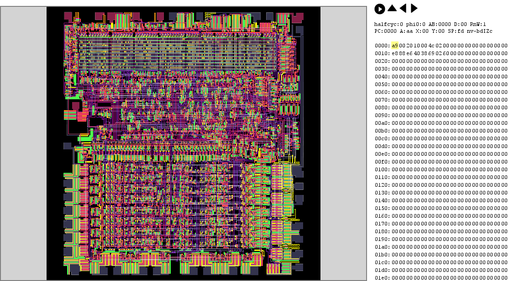

This chip simulator makes heavy use of the latest version of HTML5 drawing technology.
It will only run on recent browsers and on a computer with sufficient memory (we recommend at least 2Gbytes.)
It's been tested on Chrome, Firefox, Safari and Opera. Unfortunately Internet Explorer isn't yet capable of running the graphics.
If you're using one of the above browsers and having trouble, please restart the browser.
In the meantime, here's a picture of what you're missing:
